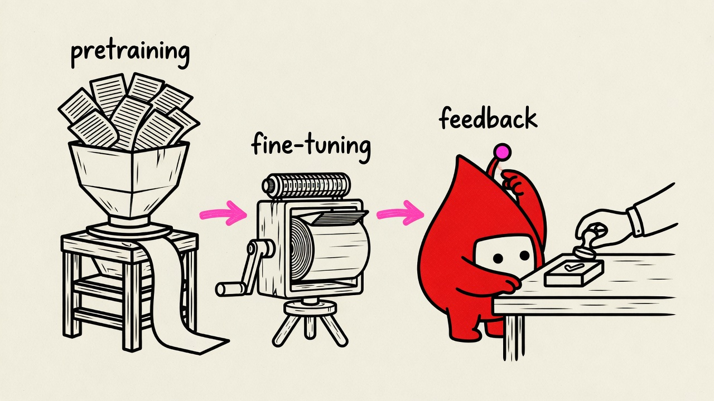
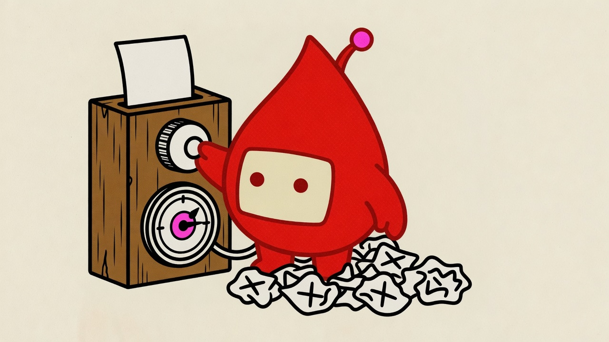

anchor2 - training stages flow
x-ai/grok-imagine-image-quality
prompt
A 16:9 horizontal editorial illustration that explains ONE idea: "modern models move through sequential training stages — massive pretraining on raw text, then fine-tuning, then human-feedback shaping — not just one technique." Composition (explainer — a flow): a hand-built sketch-diagram of ONE structure, three stations left to right on one flow line. Station 1 (left): a tall wooden mill hopper overflowing with a flood of loose scrap text-pages being fed in from above, grinding out a smooth continuous ribbon of raw paste from a slot at its base. Station 2 (middle): a simple wooden press stamping the ribbon of paste into a more defined, neater block shape as it passes through. Station 3 (right): a plain wooden table where the neat block arrives; a simple calm human hand (sleeve only, no face) reaches in from the frame's edge holding a small round stamp, poised to mark the block with an approval mark. Pulse straddles station 3, one stubby arm catching the shaped block as it arrives, the other braced on the table edge, watching the hand's stamp and visibly adjusting its own antenna dial in response — a genuine working part of the line. One main flow direction, left to right, drawn as simple hand-drawn arrows in the flow color connecting all three stations. No title, no border, no grid, no legend, no formal flowchart boxes. The structure spans ~60-70% of the frame; keep ~35%+ of the canvas empty with one calm region above. CHARACTER (locked, keep exactly on the reference model): the recurring mascot — a plump teardrop/blood-drop body (fat and rounded at the bottom, narrowing to a gentle pointed tip at the top) filled solid blood red, one rounded-rectangle screen face centered on the wide lower portion with a cream-white fill and two small dot eyes ONLY, completely blank and deadpan. STRICTLY NO eyebrows, NO brow lines, NO mouth, NO teeth. One short antenna with an accent-colored ball tip, small stubby arms and legs in the same blood-red fill. It MUST perform the move, not decorate. The body is always blood red; the screen window is always cream/paper-colored; dot eyes are dark red or charcoal. The antenna ball uses THIS palette's accent (#ff3d9a) even if the reference sheet shows a different hue. The mascot is a solid OPAQUE shape in front of the scene — no ground line, table edge, horizon, or prop passes through its body; background lines stop at its silhouette. Its limbs join the body cleanly at sensible points, exactly the count its design specifies (no extra, floating, or mid-body arms/legs). Only the mascot's own parts touch its outline: nothing is pressed flat against it. LINE LANGUAGE: draw EVERYTHING — mascot, mill, press, table, hand, arrows — in ONE bold, even-weight, softly-rounded outline (clean vinyl-sticker line), not thin scratchy sketch lines. STYLE: risograph print — grainy halftone texture, slight ink-layer offset, faint paper grain, flat fills, no gradients, no soft shadows. PALETTE: paper #fffef7. Structure ink #111111 for all linework, forms, station names, and callout text. Accent #ff3d9a used for the flow arrows and the character's antenna ball only. Semantic roles: the flow arrows use the accent ink; everything else, including all callout text, uses the structure ink. CALLOUTS: exactly 3 short hand-lettered English callouts — "pretraining", "fine-tuning", "feedback" — each appearing EXACTLY ONCE, placed directly on the bare paper above the station it names, in the structure-ink color. Hand-letter ONLY these three words — no other text, numbers, or symbols anywhere in the image. Never put callout text on a colored fill. No title bar, no type label, no logo. Aspect ratio: 16:9. Aspect ratio: 16:9.

anchor3 - optimization loop
x-ai/grok-imagine-image-quality
prompt
A 16:9 horizontal editorial illustration that explains ONE idea: "training is optimization — the model tries, gets it a little wrong, nudges its internal settings, and tries again, over and over, until it improves." Composition (a snag): Pulse stands wedged behind a small wooden control stand topped with one large dial-knob wired to a round gauge face marked with a small bullseye target zone. Pulse grips the dial-knob mid-turn with one stubby arm, caught nudging it a fraction further; the gauge's needle sits just outside the bullseye, close but not yet centered. At Pulse's feet, a loose scattered pile of small discarded attempt-slips lies crumpled and rejected, each one bearing a small hand-drawn X. Tucked in a slot at the top of the stand, one fresh, unmarked slip waits to be tried next. Pulse's posture is mid-motion and undeterred, caught in the act of yet another small correction. Generous negative space around; the stand and Pulse fill ~50-60% of the frame, slightly off-center. CHARACTER (locked, keep exactly on the reference model): the recurring mascot — a plump teardrop/blood-drop body (fat and rounded at the bottom, narrowing to a gentle pointed tip at the top) filled solid blood red, one rounded-rectangle screen face centered on the wide lower portion with a cream-white fill and two small dot eyes ONLY, completely blank and deadpan. STRICTLY NO eyebrows, NO brow lines, NO mouth, NO teeth. One short antenna with an accent-colored ball tip, small stubby arms and legs in the same blood-red fill. It MUST perform the move, not decorate. The body is always blood red; the screen window is always cream/paper-colored; dot eyes are dark red or charcoal. The antenna ball uses THIS palette's accent (#ff3d9a) even if the reference sheet shows a different hue. The mascot is a solid OPAQUE shape in front of the scene — no ground line, table edge, horizon, or prop passes through its body; background lines stop at its silhouette. Its limbs join the body cleanly at sensible points, exactly the count its design specifies (no extra, floating, or mid-body arms/legs). Only the mascot's own parts touch its outline: the dial-knob is HELD in one hand, clearly separated from the torso. LINE LANGUAGE: draw EVERYTHING — mascot, stand, dial, gauge, slips — in ONE bold, even-weight, softly-rounded outline (clean vinyl-sticker line), not thin scratchy sketch lines. STYLE: risograph print — grainy halftone texture, slight ink-layer offset, faint paper grain, flat fills, no gradients, no soft shadows. PALETTE: paper #fffef7. Structure ink #111111 for all linework, forms, and label text. Accent #ff3d9a used sparingly — the character's antenna ball + the gauge's bullseye target zone only. LABELS: no text labels in this image. No title bar, no type label, no logo. Aspect ratio: 16:9. Aspect ratio: 16:9.

anchor1 - types of training fanout v3
x-ai/grok-imagine-image-quality
prompt
A 16:9 horizontal editorial illustration that explains ONE idea: "AI models learn through four different training approaches — labeled examples, unlabeled pattern-finding, self-generated fill-in-the-blank practice, and trial-and-reward feedback." Composition (explainer — a fan-out/sort): a hand-built sketch-diagram of ONE structure. On the upper left, a wide funnel-shaped wooden hopper tips a loose pile of plain blank tiles pouring downward. Directly below the hopper, the chute splits into four separate narrow wooden channels that fan outward and down to four distinct open wooden crates arranged in a shallow arc across the lower frame. The leftmost crate holds a few tiles, each with a small paper tag tied on showing a hand-drawn checkmark. The second crate holds a loose messy pile of plain tiles with no tags at all. The third crate holds one tile with a small paper flap physically covering part of it, like a hidden word. The fourth, rightmost crate holds one tile sitting beside a small star-shaped token. Pulse stands planted on the ground directly below the fork, facing forward toward the viewer so its screen face with its two dot eyes is fully visible and unobstructed, fully visible head to toe with both stubby legs firmly on the ground. ONE short stubby arm (the character's own soft rounded arm, same blood-red fill, NOT a mechanical or jointed robot arm) reaches sideways to touch a single thin wooden stick-lever planted upright in the ground beside it — a plain stick, clearly a separate object resting in the scene, not merged with the chute or the arm; the other stubby arm rests at its side. A genuine working part of the machine, not a presenter beside it. One main flow direction, top to bottom then outward into the four crates, drawn as simple hand-drawn arrows in the flow color. No title, no border, no grid, no legend, no formal flowchart boxes. The structure spans ~55-65% of the frame; keep ~35%+ of the canvas empty with one calm region at the top. CHARACTER (locked, keep exactly on the reference model): the recurring mascot — a plump teardrop/blood-drop body (fat and rounded at the bottom, narrowing to a gentle pointed tip at the top) filled solid blood red, one rounded-rectangle screen face centered on the wide lower portion with a cream-white fill and two small dot eyes ONLY, completely blank and deadpan. STRICTLY NO eyebrows, NO brow lines, NO mouth, NO teeth. One short antenna with an accent-colored ball tip, small stubby arms and legs in the same blood-red fill — soft rounded limbs, never segmented, jointed, mechanical, or robotic-looking. It MUST perform the move, not decorate. Both legs and feet are fully visible, planted on the ground. The body is always blood red; the screen window is always cream/paper-colored; dot eyes are dark red or charcoal. The antenna ball uses THIS palette's accent (#ff3d9a) even if the reference sheet shows a different hue. The mascot is a solid OPAQUE shape in front of the scene — no ground line, table edge, horizon, or prop passes through its body; background lines stop at its silhouette. Its limbs join the body cleanly at sensible points, exactly the count its design specifies (no extra, floating, or mid-body arms/legs). Only the mascot's own parts touch its outline: the lever is HELD in one hand, clearly separated from the torso. LINE LANGUAGE: draw EVERYTHING — mascot, hopper, chutes, crates, tiles, arrows — in ONE bold, even-weight, softly-rounded outline (clean vinyl-sticker line), not thin scratchy sketch lines. STYLE: risograph print — grainy halftone texture, slight ink-layer offset, faint paper grain, flat fills, no gradients, no soft shadows. PALETTE: paper #fffef7. Structure ink #111111 for all linework, forms, station names, and callout text. Accent #ff3d9a used for the flow arrows and the character's antenna ball only. Semantic roles: the flow arrows use the accent ink; everything else, including all callout text, uses the structure ink. CALLOUTS: exactly 4 short hand-lettered English callouts — "labeled", "no labels", "fill blank", "trial + reward" — each 1-2 words, each appearing EXACTLY ONCE, placed directly on the bare paper right beside the crate it names, in the structure-ink color. Hand-letter ONLY these four words — no other text, numbers, or symbols anywhere in the image. Never put callout text on a colored fill. No title bar, no type label, no logo. Aspect ratio: 16:9. Aspect ratio: 16:9.